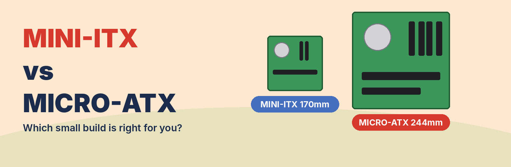

Mini-ITX vs Micro-ATX: Which Small Form Factor Should You Build?
Building a compact PC? Compare Mini-ITX and Micro-ATX motherboards on size, expansion, cooling, price, and build difficulty — and pick the right one.
Full-size ATX towers are great, but not everyone has the desk space — or the desire — for a giant case. If you want something smaller, two motherboard sizes dominate the compact PC world: Mini-ITX and Micro-ATX. They sound similar, but they lead to very different builds. One gives you the tiniest possible footprint; the other gives you a smaller PC that's still easy to build and upgrade. Here's how to choose.
How Big Are They, Really?
Mini-ITX: The Tiny One
Mini-ITX boards measure 170mm × 170mm — a perfect square about the size of a large dinner plate's centre. They're the smallest mainstream desktop motherboard standard, and they let you build PCs small enough to carry in a backpack or tuck under a TV.
Quick stat: A Mini-ITX board is roughly half the area of a full ATX board.
Micro-ATX: The Middle Ground
Micro-ATX boards are up to 244mm × 244mm, which is the same width as a full ATX board but shorter. That extra space means more slots and ports, and the cases built for them are still much smaller than full towers.
If you want to see how these sizes fit alongside standard ATX, our motherboard beginner's guide covers all the main form factors.
Mini-ITX vs Micro-ATX: The Real Differences
1. Expansion and Features
Because of the tiny size, Mini-ITX boards usually have just one PCIe slot for your graphics card, two RAM slots, and a limited number of M.2 and SATA connections. Fan headers and USB headers are also fewer.
Micro-ATX boards typically give you four RAM slots, several PCIe slots, more M.2 and SATA ports, and more headers. That's room for extra storage, a capture card, or a sound card.
Quick tip: Two RAM slots means your maximum capacity is limited by the biggest modules you can buy — plan your RAM capacity before committing to Mini-ITX.
2. Cooling and Thermals
Small cases are hot cases. In a Mini-ITX build, everything sits close together, airflow is limited, and your cooler and GPU choices are constrained by space. Many compact cases only fit low-profile CPU coolers and shorter or slimmer graphics cards.
Micro-ATX cases are larger, so they usually allow better airflow, bigger coolers, and more fans. Components generally run cooler and quieter.
Recommendation: If you want a quiet PC with a powerful GPU, Micro-ATX is far easier to get right.
3. Graphics Card and CPU Cooler Fit
Always check the maximum GPU length and thickness a case supports. Many Mini-ITX cases only take two-slot cards, which rules out some of the biggest graphics cards. CPU cooler height limits matter just as much — some SFF cases support only very short coolers or AIO radiators in specific spots.
Micro-ATX cases tend to be much more forgiving, with room for most mainstream GPUs and a good tower cooler.
Quick tip: Many compact cases publish their maximum GPU length, GPU thickness, and cooler height — write these down before you pick parts.
4. Power Supply
Many Mini-ITX cases need a smaller SFX or SFX-L power supply instead of a standard ATX one. SFX units cost more for the same wattage and come in fewer options. Micro-ATX cases more commonly accept standard ATX power supplies, which are cheaper and easier to find.
Either way, don't skimp on the PSU — our PSU efficiency guide explains what the ratings mean.
5. Price
Mini-ITX boards often cost more than Micro-ATX boards with the same chipset, because manufacturers have to pack everything into a tiny space. SFF cases and SFX power supplies can add to the bill too.
Micro-ATX boards, cases, and power supplies are generally more affordable and more widely available.
Recommendation: If budget matters, Micro-ATX usually gives you more for your money.
6. Build Difficulty
Mini-ITX builds are tight. Cable management is harder, parts have to go in a specific order, and some cases make you work in cramped spaces. It's very doable, but it takes patience and planning.
Micro-ATX is far more beginner-friendly. There's room to work, room for cables, and room to fix mistakes.
Quick tip: First PC? Micro-ATX is the easier place to learn.
Which One Is Right for You?
Pick Mini-ITX If You Want…
The smallest possible PC. Mini-ITX is the right choice for a portable LAN party rig, a living-room gaming PC, a tiny desk setup, or anything where footprint matters more than convenience. Just be ready for tighter parts choices and a more careful build.
Pick Micro-ATX If You Want…
A compact PC that's still practical. You get a smaller case than a full tower, but with better airflow, more upgrade options, cheaper parts, and an easier build. For most people who want something smaller than a standard tower, Micro-ATX is the sweet spot.
Recommendation: Unless you truly need the tiniest case, start with Micro-ATX.
Frequently Asked Questions
Can a Mini-ITX board fit in a Micro-ATX case?
In most cases, yes. Mini-ITX boards use mounting holes that line up with the larger standards, so they fit in most Micro-ATX and ATX cases. Always confirm in your case's specifications.
Can a Micro-ATX board fit in a Mini-ITX case?
No. A Micro-ATX board is larger than a Mini-ITX board and won't fit in a case designed only for Mini-ITX.
Is Mini-ITX good for gaming?
Yes, but you have to choose parts that fit and manage heat carefully. A well-planned Mini-ITX gaming PC can perform just like a larger one.
Is Micro-ATX good for beginners?
Yes. It's easier to build, easier to cool, and usually cheaper than Mini-ITX, making it a great first compact build.
Bottom line: Mini-ITX wins on size, but you pay for it in price, heat, and build difficulty. Micro-ATX gives you a smaller PC that's still easy to cool, upgrade, and afford. If you truly need the tiniest footprint, go Mini-ITX and plan your parts carefully. For everyone else, Micro-ATX is the practical sweet spot.
Want complete parts lists for a compact or full-size build?
👉 Read: Best Gaming PC Builds 2026 — From $600 to $2,000